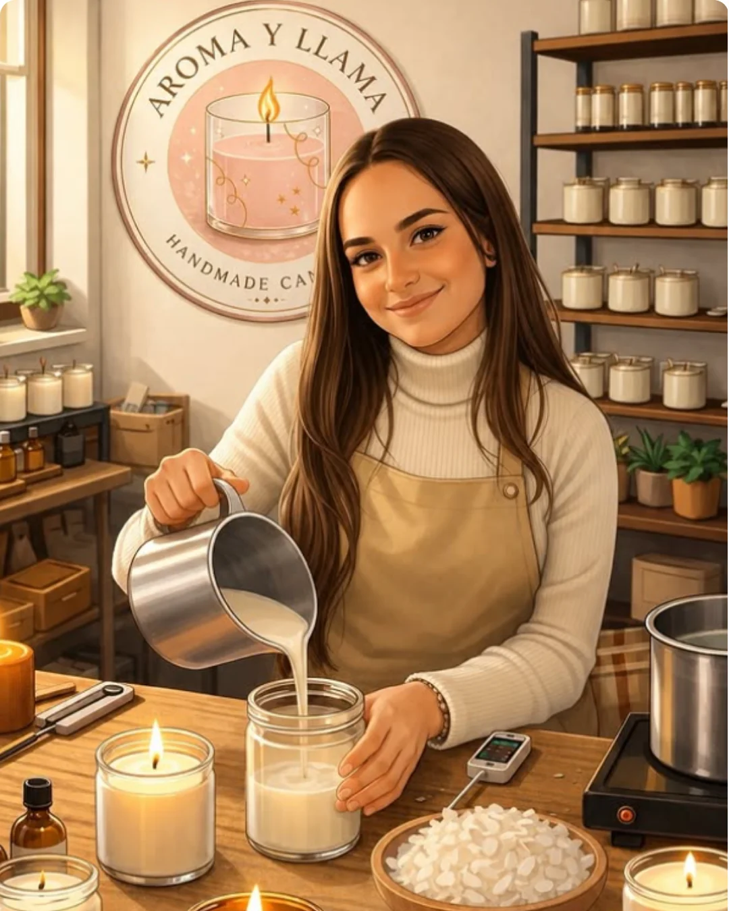
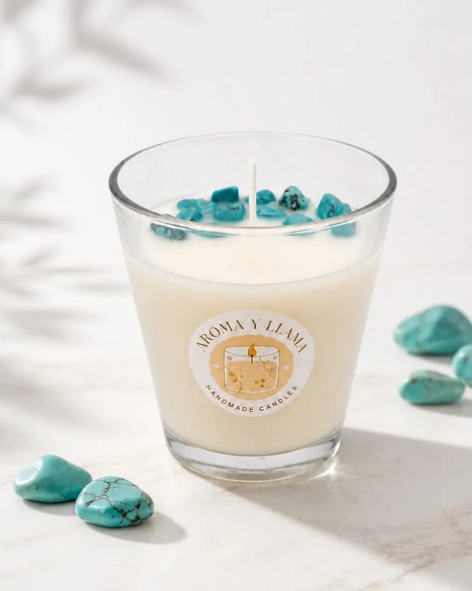
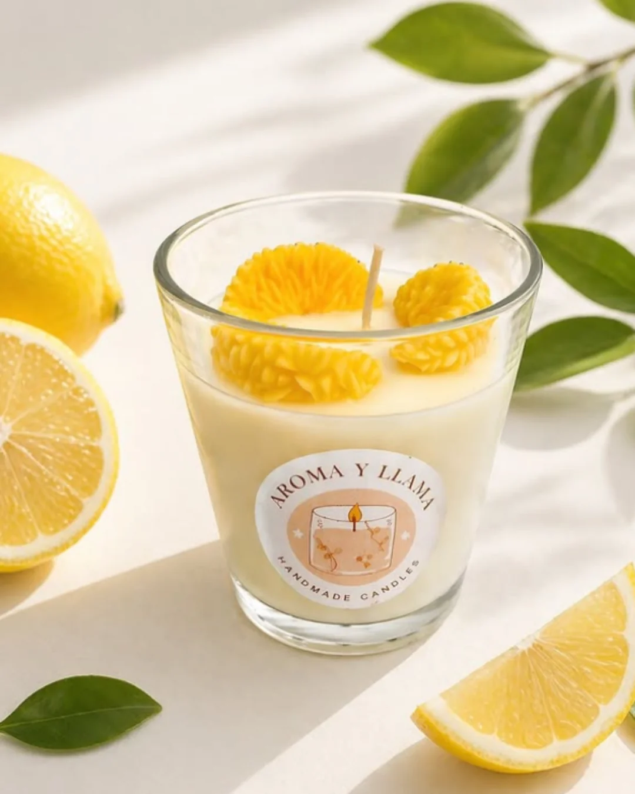
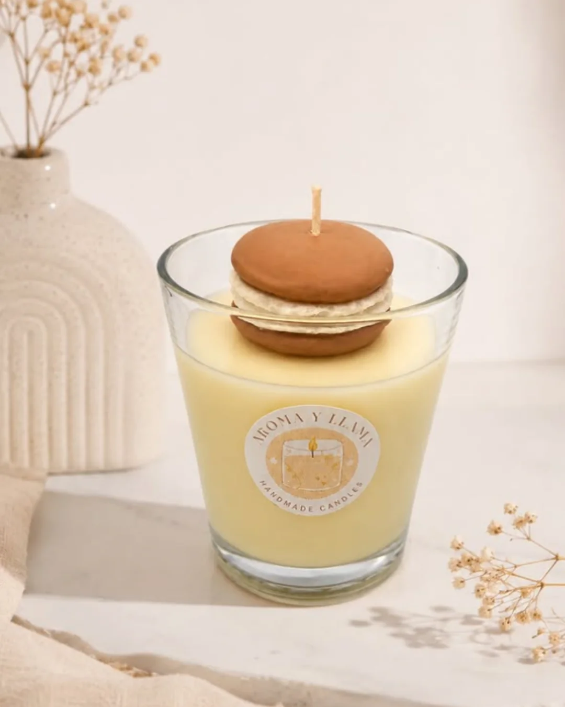

Disponible
Envío gratis a partir de 35€ • Hecha a mano en Murcia
Velas artesanales de cera de soja 100% natural. Piezas únicas, sostenibles y hechas a mano con intención en Murcia.

HECHO CON LAS MANOS Y EL CORAZÓN
Nací en Murcia, rodeada de aromas que me transportaban a momentos de paz. Un día decidí convertir esa pasión en algo tangible: velas que no solo iluminan, sino que abrazan.
Todas nuestras velas están hechas a mano con cera de soja 100% natural, mechas de algodón y aromas cuidadosamente seleccionados. Cada pieza es única, porque cada persona que la recibe también lo es.
“Quiero que cuando enciendas una vela de Aroma y Llama, sientas que alguien pensó en ti.”
Cada una es una pequeña obra de arte hecha con intención y mucho cariño.
Arde más limpia y más tiempo que la parafina. Sin humo tóxico ni residuos.
Cada vela es única. No hay dos iguales. El proceso es lento y lleno de intención.
Fragancias naturales que calman la mente y el hogar. Pensadas para el bienestar.
Perfectas para cumpleaños, bodas, agradecimientos o simplemente “te quiero”.
Materiales de calidad, producción ética y apoyando el comercio de proximidad en Murcia.
No solo son velas: son objetos bonitos que embellecen cualquier rincón de tu casa.
Todo lo que necesitas saber sobre velas caseras y ecológicas para cuidar tu hogar y regalar con intención.

No todas las velas “naturales” lo son. Aprende a identificar cera de soja pura, mechas seguras y aromas sin tóxicos.

Descubre por qué la cera de soja es más ecológica, arde más limpia y es mejor para tu salud y el planeta.

Desde bodas hasta agradecimientos: ideas bonitas y con significado usando nuestras velas artesanales.
Trucos sencillos para que tus velas caseras ardan de forma uniforme y duren el doble de tiempo.
¿Quieres más consejos? Escríbeme por WhatsApp y te ayudo personalmente.
Cuéntame qué necesitas. Te responderé personalmente.
Envío gratis a partir de 35€ • Hecha a mano en Murcia
Gracias por confiar en Aroma y Llama. Te responderé personalmente muy pronto.